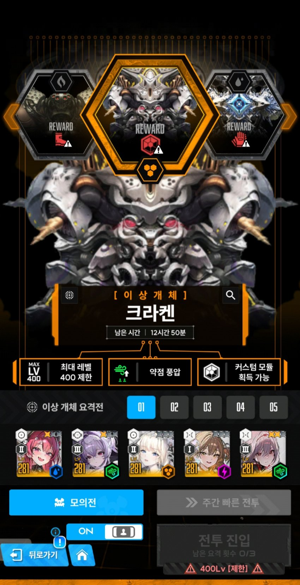
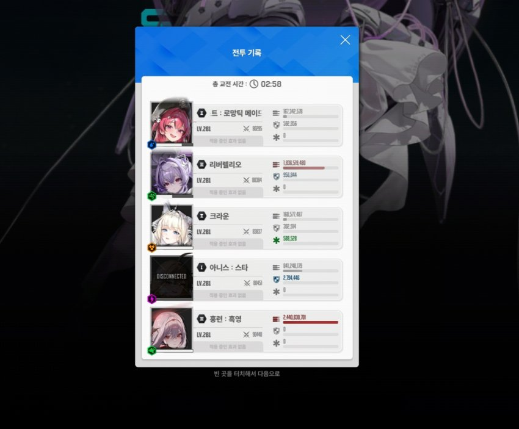

캐릭스펙
큐브는 재장전큐브 10렙
메스트 5550 풀육성(sr15 스작 10 10 10)
크라운 5550 풀육성
아니스 4310 풀육성
리버렐리오 4310 풀육성
오버 우 96 공 41 크확
흑련 4310 스킬만 10 7 10
오버 우90 차14 장탄 크댐
택틱
버스트 순서로 설명하겠삼
버스트는 솔레하듯이 최대한 빠르게 땡겨야함
아니스 톡톡이가 안돼서 15버는 안될거같긴한데
14번째 메스트흑련 버스트타임 폰으로도 8초까진 됨
1. 아 메 리
1페 첫번째 다리 코어치면서 부숴줌
몸통치면서 좀 느리게 잡아야됨
2. 아 크 흑
두번째 다리 나오면서 버스트 진입함
두번째다리가 너무빨리 나와서
버스트 끝나기 전에 전체기만 안쓰게 해주면됨
두번째다리는 버스트시간 1~1.5초 남았을때 깨야함
3. 아 메 리
두번째다리 위처럼 깨면 촉수 나오고 버스트들어감
다리코어에 메스트 리버3초 공증샷 뻥뻥
광역기는 엄폐해주고 엄폐물 조금 남음
4. 아 크 흑
속저 나오면서 버스트꺼지는데
그냥 크라운잡고 버스트 킨다음에 속저해주면됨
속저 빠르게 해서 세번째다리 불러내고
세번째다리는 바로 부숴주면됨
메스트 기절상태일때 노란똥 맞으면 엄폐물 날라가서 리트
여기서부터 아니스한테 노란똥 쏘면 뒤지니깐 태보해야함
5. 아 크 리
1페이즈 네번째 다리 나오고
딜조절 해서 버스트시간 0.5~1.5초남았을때 다리깨야함
그래야 물속으로 숨기전에 리버 버스트 갈김
6. 아 메 흑
앞다리 내놓은거 치면서 광역기는 엄폐해주기
엄폐물 여기서 다날라감
7. 아 크 리
코어 노출하면서 물속으로 숨는데
충분히 리버 버스트 갈겨줄수있음
물속에 숨으면 크라운 재장전 후에 전체엄폐하고
족자저지(esc컨) 최대한 빠르게 해주기
네번째 다리 시간조절이랑 족자저지 잘해야
14번째 메스트 흑련 버스트 시간 늘어남
8. 아 크 흑
2페이즈 진입후에 뒷다리랑 앞다리 와리가리 치는데
가마니처럼 가만히 자동조준켜놓고 손놓고있음
다리 4번중에 1번까진가 깨짐
9. 아 메 리
여기서 2~4번째 다리 깨질건데
아니스가 랜덤타겟인가 뒷다리 못깨서
메스트 타이밍에 뒷다리 맞고 죽는경우있음
보다가 뒷다리 안깨져있으면 깨주면됨
10. 아 크 흑
4번째 다리 나와있을건데
버스트 진입하고나서 다리 깨줘야 타이밍 맞음
속성저지 뜨면서 뒷다리 나오는데
나도 이거 뭔지몰라서 그냥 깨줌
11. 아 크 리
2페 4번째 다리를 버스트 진입하고나서 깼으면
버스트 바로굴리면 노란똥이 크라운쉴드 안깜
12. 아 메 흑
2페이즈 두번째로 다리네개 나오는데
여기서도 아니스가 뒷다리 못부숴줄때 있음
뒷다리 부술준비 항상하기
13. 아 크 리
가마니 가마니
14. 아 메 흑
마지막 6~11초 남을거임
속성저지 뜨면서 노란똥 날리는데
나는 아니스 엄폐못해줘서 뒤짐
시간보면서 저지안하고 째도되고 해도되고
좀 널널하게 잡은거같은데 2초차이 진땀승이었네
응애들도 할수있다 크라켄9단 화이팅!